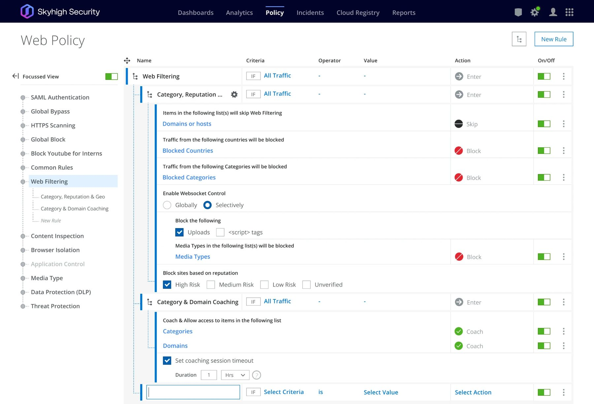
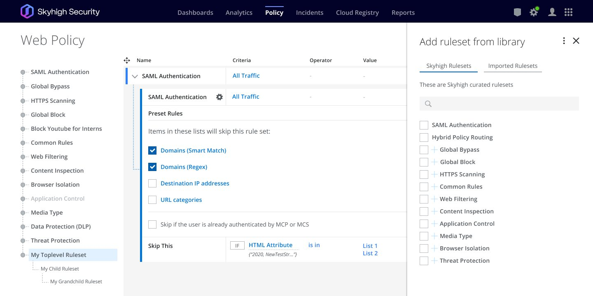
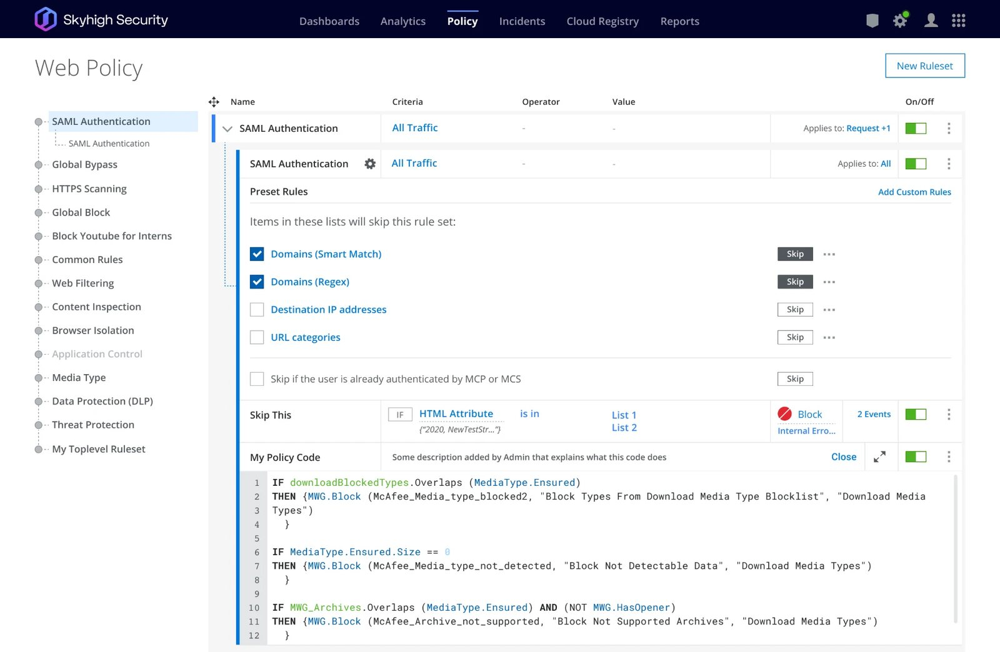
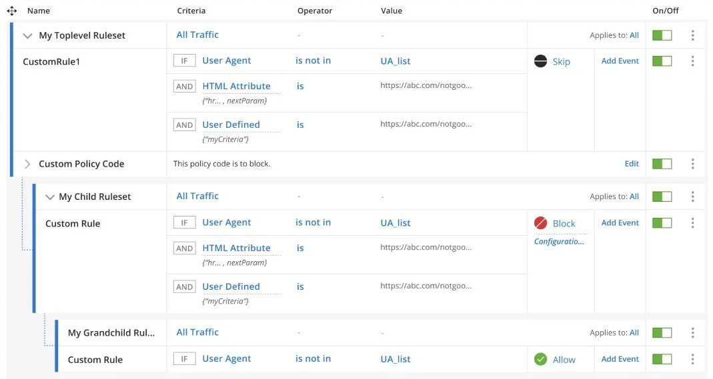
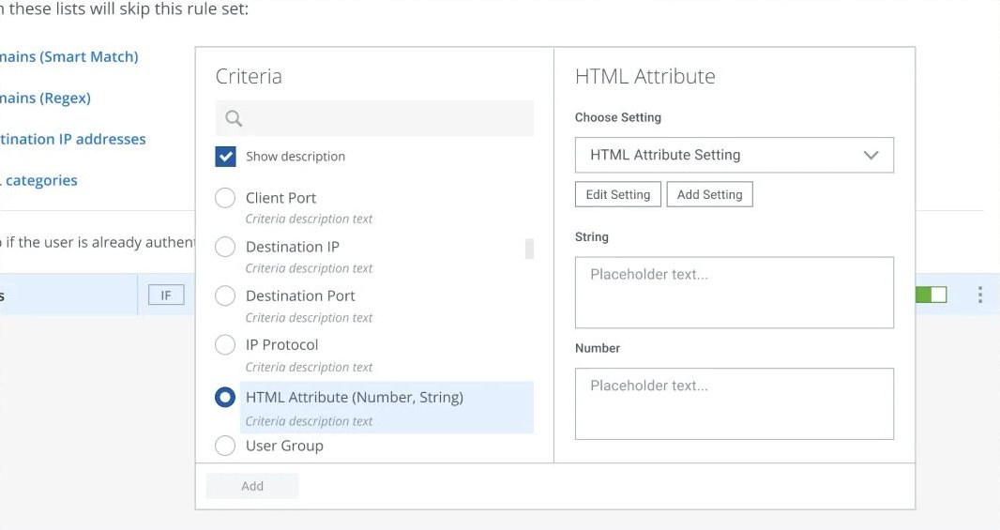
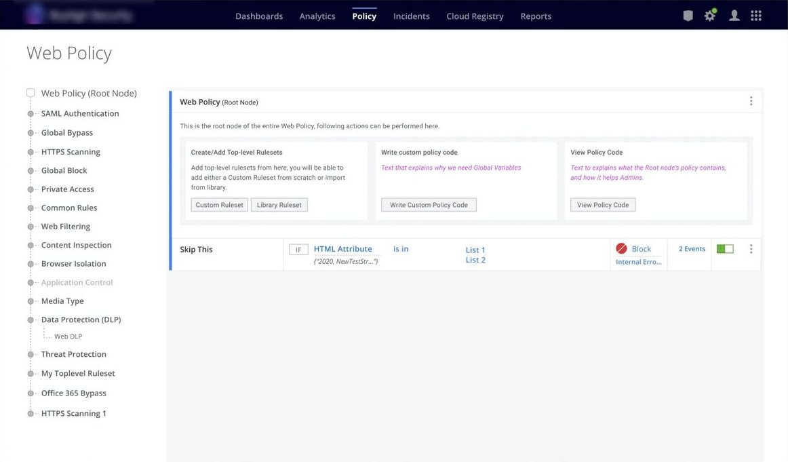
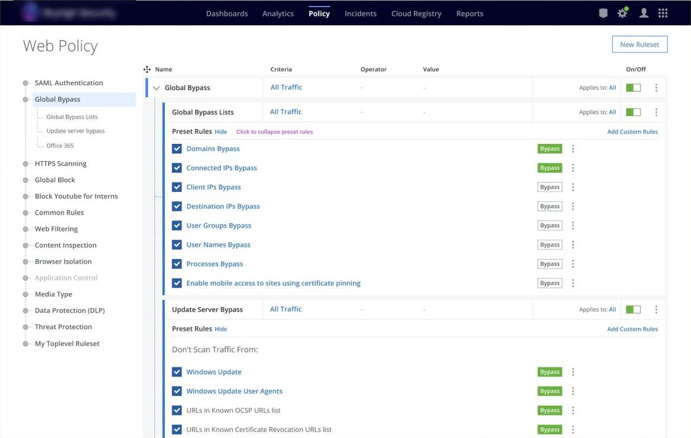
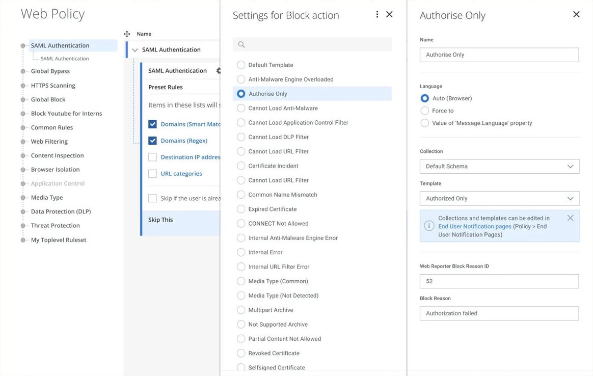
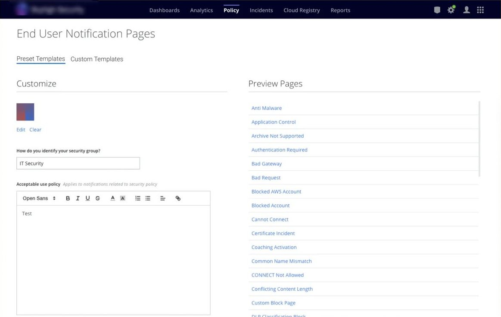

Web Security Rule Builder
Skyhigh Security2021–22
The Web Policy rule builder is a rule-based web gateway security configuration app. Web Security Administrators (InfoSec teams) configure rules to control and monitor web traffic between an enterprise boundary and the internet. These rules control and filter web traffic originating from users accessing the web and block or allow, for example, downloads from the web. This ensures protection against web threats such as viruses and other malware, data exfiltration, etc., which can arise from uncontrolled web access.

The problem
The Web Security Administrators are currently provided with a configuration UI that is mostly switch-based (on/off or enable/disable).
- Limited control via the user interface (mostly switches)
- For complex rules, customers need to learn the product’s proprietary code language OR spend money on PS (professional services) hours.
Proposal
To build a tabular rule-builder that enables Security Administrators to write complex rules via the user interface, without letting go of:
- The existing simple UI, which works very well for simple use cases and is an easy out-of-the-box (plug-configure-play) solution.
- Complex code insertion for complex use cases.
The idea was to create a “Standard” interface where users can write complex rules in the comfort of a usable UI.
The trifecta
We worked as a trifecta consisting of UX, PM, and Engineering.
Within the UX team, we had an internal trifecta consisting of a UX Researcher, a UX Designer (Interaction Designer), and the Design System lead. Although I led the UX efforts for this product, I took timely help from UX researchers to conduct research sessions and document findings. My collaboration with the Design System lead helped us work on new component requirements, assessing and reusing existing components.
Discovery
Approach evaluation
We built a high-level wireframe to conduct user research sessions, to understand whether this direction was apt for users and which key issues they would like the solution to address.
Research
Separate research sessions with 7 customers (around 23 participants) were conducted with the following goals:
- Feedback on the proposal
- Identifying key pain points
- Prioritizing features
Based on the outcome of the research sessions, Product Management and UX together identified the features for the MVP.
Information design
Dependency
Security Policy (application) is positioned within a suite of other security applications under one platform. It depends on the Configurations and Lists repositories, so I first needed to understand how they work and how they are built.
Structure/hierarchy
Irrespective of whether we are building a product from scratch or adding features to an existing app, it is important to understand the information design so that we cater to the contextual placement of:
- Information
- Actions
- Indicators (/messaging)
Anatomy of a condition
In this app, a condition is the basic unit that constructs a rule, so defining all the combinations that make up a condition unfolds the underlying interactions.
Workflows/interactions
Due to the complex nature of this application, we had to carefully stitch multiple interactions to help users (security administrators) build rules.
Rule library
Since the existing app had predefined rules that could be configured, we planned to provide these rules in a library, from which they could be imported into the policy along with custom-created rules.

Adding rules
We defined three types of rules:
- Library Rules
- Custom Rules – via UI
- Custom Rules – via Code

Nested rulesets
Since the entire security policy works on the basis of filtering/scoping web requests and responses, an interaction to add nested rulesets was prepared.

Scoping rules
Scoping was based on numerous factors, such as source and destination ports, user groups, location and many more.

Prototypes
Multiple prototypes were created to communicate the interaction flows. They helped explain the flows in customer validation sessions and to the front-end dev team, SMEs, etc.
Key views




Appreciation
Some of the team members I collaborated with voluntarily sent me appreciation for the approach and ownership I showed on this project.
“Appreciate the efforts you have put in collaborating with stakeholders, research, organizing tasks and designing the Std View wireframes.”
Swetha Thandava Murthy “Thanks for coordinating and working with the team on all UX activities for UCE and providing information in a timely manner.”
Sumithra Dhandayuthapani “Chetan, I’d like to thank you for your relentless support, guidance, expertise and work. You are an expert in UX and have the ability to listen and transform technical details into high fidelity UX screens and guidance for your engineering counterparts. I do very much appreciate you and all you are doing. Your work, diligence, support and your friendly, calm and professional attitude in our day 2 day interaction but also in difficult situations make a difference - for us as team and for us as business. You are a valued member of our team. Your work makes it is possible for us to advance and growing sky high...and beyond.”
Michael Schneider “You are now a pillar of the team”
Jim Beno
Thanks for your time
This rule builder is pretty complex in nature, and the UX effort ran for 7–8 months, including all the customer validation sessions. I couldn’t explain everything here, but we could set up a call, and I’d be glad to walk you through the entire process.
- Emailchetanshridhar@gmail.com
- More workSelected work